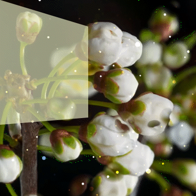

Fish Out of Water
2026 | Made in After Effects
A fish...in outer space and a garden? That is most certainly a fish out of water! In this video project, I have made two separate, yet connected gifs. As the fish swims out of frame in the first gif, it enters the second gif. The main purpose of this project was to experiment in After Effects.